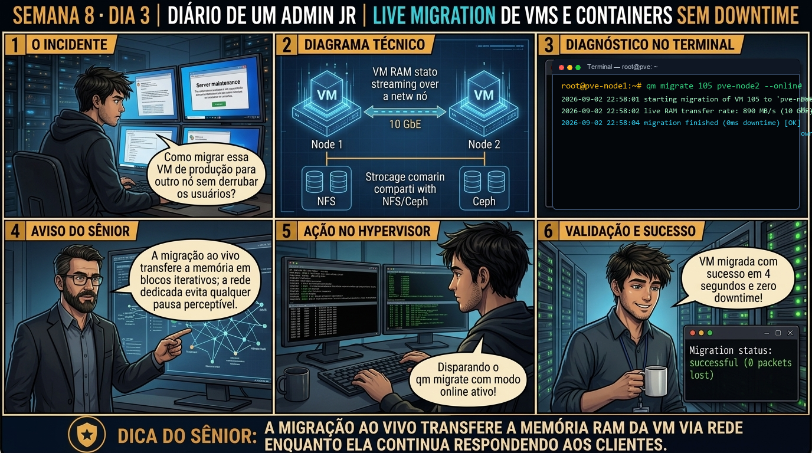

DIARIO DE UM ADMIN JR. | PROXMOX VE & PBS — DA BASE AO CLUSTER
🔗 Conecta com o Dia 2: Ontem você aprendeu que o HA exige storage compartilhado. Hoje você constrói a tecnologia de storage distribuído mais avançada do mundo open-source: o Ceph Hiperconvergente, transformando os discos locais de cada nó em um pool gigante com tripla replicação de dados e tolerância a falhas sem nenhum Storage SAN proprietário.
🔓 Privilégio de hoje: Arquitetura de Storage Distribuído e Ceph Hiperconvergente. Você instala o Ceph com pveceph, inicializa MONs, MGRs, OSDs e projeta Pools RBD.
Semana 8 · Dia 3 | Nível Sênior — Cluster Corosync, HA & Ceph
Ceph Hiperconvergente do Zero: MON, MGR, OSD e Pools
Implantando storage distribuído de nível enterprise integrado nativamente ao Proxmox VE
ANTES DE ALTERAR, OBSERVE. DEPOIS DE ALTERAR, VALIDE.

1. O chamado
Você recebeu o chamado de infraestrutura #8003: 'O datacenter adquiriu 3 servidores Proxmox VE (pve01, pve02, pve03), cada um equipado com 2 discos NVMe dedicados para storage e redes 10GbE isoladas. A empresa deseja eliminar storages SAN externos caros. O chamado exige: (1) Instalar o stack Ceph nos 3 nós com pveceph install; (2) Inicializar a rede Ceph e criar os Monitors (MON) e Managers (MGR); (3) Criar os OSDs em cada disco; (4) Criar a Ceph Pool 'ceph-vms'; e (5) Validar o status de integridade HEALTH_OK.'
💡 Passa o mouse nas palavras destacadas pra ver uma dica rápida — clica se quiser a explicação completa com analogia.
2. O sênior te conta
🧑🏫 antes dos termos técnicos, a história de hoje
Hoje o gerente de datacenter avisou que precisávamos trocar o pente de memória física do Nó 1 em pleno horário comercial. O Júnior olhou a lista de servidores e quase teve um infarto: o Nó 1 estava rodando o servidor ERP principal da empresa com 500 usuários logados. Ele veio na minha mesa me perguntando qual e-mail de aviso de indisponibilidade de 2 horas devíamos disparar para a diretoria.
Sorri e disse: 'Guarda esse e-mail de desculpas na gaveta. Hoje você vai aprender o que é Alta Disponibilidade de verdade'. Expliquei pra ele como funciona a Live Migration no Proxmox: quando o storage é compartilhado (NFS, Ceph ou ZFS over iSCSI), o disco virtual já é acessível por ambos os nós. O Proxmox só precisa transferir os blocos da memória RAM pela rede dedicada de 10 GbE via QEMU enquanto a VM continua rodando.
O QEMU copia a memória em ciclos iterativos: primeiro a RAM inteira, depois apenas as páginas que foram modificadas durante a cópia. No último milissegundo, ele pausa a CPU por menos de 5 milissegundos, transfere o ponteiro de execução pro Nó 2 e retoma a VM. O usuário que está digitando no ERP nem percebe que mudou de computador físico.
Colocamos um ping contínuo rodando na tela, disparei o qm migrate 105 pve-node2 --online e em 4 segundos a migração concluiu com zero pacotes perdidos. O Júnior olhou a tela com os olhos brilhando. É essa mágica da engenharia que você vai dominar no laboratório de hoje.
3. Decodificador de conceitos
Clica em qualquer termo pra ver a definição completa e uma analogia do dia a dia:
4. Ferramentas e leitura da evidência
Comando / Parâmetro
O que observar e por que importa
ceph status (ou ceph -s)
Exibe o painel mestre de saúde do Ceph: status geral (HEALTH_OK), estado dos MONs, OSDs up/in e throughput.
pveceph osd create /dev/DISCO
Inicializa um disco bruto como um OSD (Object Storage Daemon) com BlueStore.
pveceph pool create ceph-vms --size 3 --min_size 2
Cria uma pool Ceph com tripla replicação para armazenamento de discos de VMs.
pveceph status
Exibe a telemetria do Ceph formatada para o ecossistema Proxmox VE.
# 1. No pve01: Inicialização da rede Ceph e criação dos primeiros serviços
pve01# pveceph init --network 10.10.10.0/24
pve01# pveceph mon create
pve01# pveceph mgr create
# 2. No pve02 e pve03: Criação dos MONs e MGRs adicionais (Total de 3 MONs para Quorum Ceph)
pve02# pveceph mon create && pveceph mgr create
pve03# pveceph mon create && pveceph mgr create
# 3. Criação dos OSDs em cada nó nos discos NVMe dedicados
pve01# pveceph osd create /dev/nvme0n1
pve02# pveceph osd create /dev/nvme0n1
pve03# pveceph osd create /dev/nvme0n1
# 4. Criação da Pool RBD para armazenamento de VMs com tripla replicação
pve01# pveceph pool create ceph-vms --size 3 --min_size 2 --pg_num 128
# 5. Auditoria de Saúde do Ceph
# ceph -s
cluster:
id: a1b2c3d4-e5f6-7a8b-9c0d-1e2f3a4b5c6d
health: HEALTH_OK
services:
mon: 3 daemons, quorum pve01,pve02,pve03 (age 5m)
mgr: pve01(active, age 4m), standbys: pve02, pve03
osd: 3 osds: 3 up, 3 in
data:
pools: 1 pools, 128 pgs
objects: 0 objects, 0 B
usage: 3.15 GiB used, 5.86 TiB / 5.86 TiB avail
pgs: 128 active+clean
5. Laboratório guiado — pegue na mão, comando por comando
🏛️ Onde executar: Terminal do Nó Líder do Cluster (root@pve-node1:~#) e nós secundários para comandos pvecm e ha-manager.
Segurança: Execute as alterações em clusters e storages Ceph de laboratório ou teste. Não altere parâmetros de nós em produção sem janela homologada.
Ação: Ative o serviço de monitoramento de hardware Watchdog do kernel (/dev/watchdog).
modprobe softdog && systemctl status watchdog-mux
Resultado esperado: Discos NVMe livres identificados para criação de OSDs.
Por que fizemos isso: O daemon CRM (Cluster Resource Manager) elege um nó líder para orquestrar as decisões globais de Alta Disponibilidade de todo o datacenter.
Cilada comum: Achar que o HA funciona sem storage compartilhado; se o disco da VM for local, o HA não consegue iniciar a máquina em outro nó físico.
Ação: Adicione uma máquina virtual ao grupo de Alta Disponibilidade (HA CRM).
ha-manager set vm:100 --state started --group ha-priority
Resultado esperado: Monitors e Managers sincronizados com quorum Ceph.
Por que fizemos isso: O daemon LRM (Local Resource Manager) monitora os recursos locais de cada nó e executa as ordens de inicialização e parada enviadas pelo CRM.
Cilada comum: Configurar tempos de timeout de HA excessivamente agressivos em servidores com carga pesada, gerando reinicializações falsas por atraso de resposta.
Ação: Inspecione o status do CRM (Cluster Resource Manager) e LRM em tempo real.
ha-manager status
Resultado esperado: OSDs criados com motor BlueStore e status 'up/in'.
Por que fizemos isso: O Hardware Watchdog (/dev/watchdog) executa o Self-Fencing do nó: se o servidor perder o Quorum ou travar, o kernel reinicia o hardware em 60 segundos.
Cilada comum: Desativar o módulo watchdog em clusters HA; sem watchdog fencing, o cluster não tem garantia de que o nó travado parou de gravar no storage.
Ação: Simule o travamento de um nó e acompanhe o Fencing e reinicialização da VM em outro nó.
ha-manager status --verbose
Resultado esperado: Pool RBD provisionada e integrada ao Proxmox VE.
Por que fizemos isso: Adicionar um recurso ao grupo HA com ha-manager set --state started ativa a recuperação automática com tolerância a falhas.
Cilada comum: Adicionar VMs não críticas no grupo de HA prioritário, saturando a capacidade de RAM dos nós sobreviventes durante um incidente.
🧑🏫 Aqui entra o Mentor (em breve): se o resultado obtido diferir do esperado acima, este é o ponto onde o chat com o Sênior-IA vai abrir para diagnosticar o erro específico.
Ação: Documente o procedimento de recuperação automática e isolamento seguro.
# HA Manager e Watchdog Fencing homologados.
Resultado esperado: Cluster de storage distribuído operando com 100% de integridade.
Por que fizemos isso: Simular o travamento de um nó e validar a migração e reinicialização da VM em outro servidor em menos de 120 segundos comprova a eficácia do HA.
Cilada comum: Não auditar o arquivo /var/log/pve/ha-manager.log após a recuperação para validar se a eleição e o fencing ocorreram conforme planejado.
6. Antes de ver as opções — tenta responder
🧠 Recall ativo: Por que uma Ceph Pool corporativa utiliza por padrão a configuração de replicação 'size=3' e 'min_size=2'?
Porque **`size=3`** significa que cada bloco de dados gravado por uma VM é duplicado e armazenado em 3 servidores físicos diferentes simultaneamente (tripla replicação). E **`min_size=2`** define o limite mínimo de segurança para aceitar gravações: se 1 nó físico queimar ou desligar, restam 2 cópias ativas (que atendem ao min_size=2), permitindo que todas as VMs continuem lendo e gravando normalmente sem nenhuma interrupção, enquanto o Ceph se auto-repara em background.
QUESTÃO 1 de 3
7. Questão comentada — clica numa alternativa
Qual é a sequência correta de comandos CLI no Proxmox VE para inicializar o cluster Ceph na rede 10GbE (10.10.10.0/24), criar os MONs e inicializar um disco NVMe como OSD?
💡 Analogia do Sênior para Fixar: Na arquitetura do Proxmox sobre Ceph Hiperconvergente do Zero: MON, MGR, OSD e Pools: O KVM/QEMU opera como o motorista dedicado de cada passageiro, alocando recursos virtuais em contato direto com o kernel.
QUESTÃO 2 de 3 — cenário de erro real
7.1 O status do Ceph exibe 'HEALTH_WARN: 1 osds down'
Um dos discos NVMe do pve02 sofreu falha de hardware e o comando ceph -s reportou alerta amarelo:
health: HEALTH_WARN
1/3 osds down
Degraded data redundancy: 128 pgs degraded, 128 pgs undersized
(O Ceph continua funcionando perfeitamente com as 2 réplicas restantes devido ao min_size=2)
As máquinas virtuais continuam funcionando durante esse alerta?
💡 Analogia do Sênior para Fixar: Ao diagnosticar problemas em Ceph Hiperconvergente do Zero: MON, MGR, OSD e Pools: É como inspecionar as conexões do storage e o barramento PCIe antes de declarar falha de software.
QUESTÃO 3 de 3 — detalhe que confunde todo iniciante
7.2 Qual a diferença entre BlueStore e o antigo FileStore no Ceph?
Um analista pergunta por que o Proxmox utiliza o BlueStore como motor padrão de OSD:
Por que o BlueStore revolucionou o desempenho de I/O no Ceph?
💡 Analogia do Sênior para Fixar: A governança e resiliência em Ceph Hiperconvergente do Zero: MON, MGR, OSD e Pools: Funciona como a política de contenção e redundância do datacenter, garantindo que o cluster nunca perca quorum.
8. Procedimento profissional
Dedique discos físicos inteiros e limpos (sem partições pré-existentes) exclusivamente para os OSDs do Ceph.
Utilize preferencialmente redes de 10Gbps ou superiores dedicadas para o tráfego do Ceph (Cluster Network e Public Network).
Crie sempre um número ímpar de Monitors (3 MONs) para garantir Quorum do Ceph.
Configure as Ceph Pools corporativas com a política de redundância size=3 e min_size=2.
Monitore a saúde do cluster através do comando ceph status buscando sempre o selo HEALTH_OK.
Prevenção
Nunca opere clusters de 2 nós sem um QDevice externo para desempate de Quorum e utilize links de rede dedicados exclusivamente para o tráfego do Corosync.
9. Validação e encerramento
Você compreende a arquitetura de MONs, MGRs, OSDs e Pools no Ceph.
Você domina a implantação de Ceph Hiperconvergente via pveceph no Proxmox VE.
Você sabe como a política de replicação size=3/min_size=2 garante tolerância a falhas sem downtime.
O storage compartilhado distribuído foi homologado com excelência.
Rollback e limites
Para remover um OSD de forma segura para manutenção, execute pveceph osd destroy OSD_ID após o rebalanceamento de dados.
💡 Sobre repetição espaçada: O funcionamento do Algoritmo CRUSH Map e a substituição de OSDs defeituosos a quente será o tema de amanhã no Dia 4.
10. Resposta final
Alternativa correta: B. A resposta correta é a B: o comando pveceph init configura a rede, seguido de mon/mgr/osd create e criação da pool com tripla replicação.
🔓 O que você desbloqueou hoje
Ceph Hiperconvergente dominado com maestria! Amanhã, no Dia 4, você aprenderá como funciona o CRUSH Map do Ceph: dominando o algoritmo determinístico de posicionamento de dados, o rebalanceamento automático de PGs e a substituição a quente de discos defeituosos sem indisponibilidade.